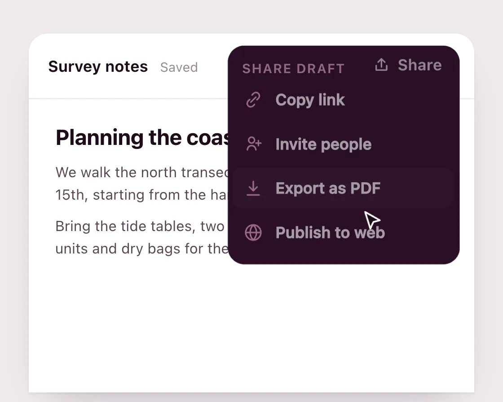

Button to menu
Button to menu is a DOM effect: one surface, a rounded clip-path opening from the button corner. One plain JavaScript file with no dependencies; add it with npx motion-library add button-menu.

Open it live, tune it and copy the code
What is Button to menu?
A Share button opens into its menu as one dark surface, then closes back into the button.
How does Button to menu work?
A clip-path inset with rounded corners shows only the button-sized corner, then opens to the full menu; items follow in a short stagger and leave first.
How do I add Button to menu to my website?
- In your project folder, run
npx motion-library add button-menu. It writesanimations/button-menu.js. Needs Node 18 or newer. - Import it and call it with a container element that has a size:
import fx from './animations/button-menu.js'; const stop = fx(document.querySelector('#hero')); - Call
stop()to clean up, for example when a component unmounts.
Every setting below is also a flag, so you can install it already tuned: npx motion-library add button-menu --duration 600.
What settings can I tweak?
| Setting | Flag | Default | Range | Step |
|---|---|---|---|---|
| Morph (ms) | --duration | 300 | 150 to 600 | 10 |
| Item stagger (ms) | --stagger | 35 | 0 to 100 | 5 |
Specifications
- Renderer
- DOM (CSS and the Web Animations API)
- Category
- Morph & SVG
- Dependencies
- None
- File size
- 7.6 KB, unminified
- Interactive
- Yes: it responds to the pointer
- Reduced motion
- Respects prefers-reduced-motion
- Licence
- MIT-0: use it anywhere, no credit needed
Source code
// Button to menu: the Share button and its menu are one surface. A clip-path with rounded corners shows only the button-sized corner, then opens to the full menu and back, so the menu grows out of the thing you pressed instead of a second box appearing beside it.
const PARAMS = { duration: 300, stagger: 35 };
export default function (stage) {
const reduce = matchMedia('(prefers-reduced-motion: reduce)').matches;
const root = document.createElement('div');
root.className = 'bm-root';
const items = [['Copy link', 'M9 15l6-6M10.5 6.5l1.8-1.8a4 4 0 015.7 5.7l-1.8 1.8M13.5 17.5l-1.8 1.8a4 4 0 01-5.7-5.7l1.8-1.8'], ['Invite people', 'M15 19a5 5 0 00-10 0M10 11a3.5 3.5 0 100-7 3.5 3.5 0 000 7zM18 8v6M15 11h6'], ['Export as PDF', 'M12 4v11M7.5 10.5L12 15l4.5-4.5M5 20h14'], ['Publish to web', 'M12 21a9 9 0 100-18 9 9 0 000 18zM3 12h18M12 3c2.5 2.6 3.8 5.6 3.8 9s-1.3 6.4-3.8 9c-2.5-2.6-3.8-5.6-3.8-9S9.5 5.6 12 3z']];
root.innerHTML = `<style>
.bm-root { position: absolute; inset: 0; overflow: hidden; background: #efeaee; font-family: system-ui, -apple-system, sans-serif; }
.bm-b { position: absolute; left: 50%; top: 50%; width: 420px; height: 320px; transform-origin: 0 0; }
.bm-doc { position: absolute; left: 24px; top: 20px; width: 372px; height: 300px; border-radius: 16px 16px 0 0; background: #fff; box-shadow: 0 1px 2px rgba(42,15,38,.07), 0 16px 36px -18px rgba(42,15,38,.3); }
.bm-bar { position: absolute; left: 0; right: 0; top: 0; height: 54px; border-bottom: 1px solid #f1e8ef; display: flex; align-items: center; padding: 0 16px; gap: 10px; }
.bm-file { font-size: 13px; font-weight: 650; color: #1d0b1a; }
.bm-saved { font-size: 11px; color: #9a8996; }
.bm-av { margin-left: auto; margin-right: 100px; display: flex; }
.bm-av i { width: 24px; height: 24px; border-radius: 50%; border: 2px solid #fff; margin-left: -6px; }
.bm-txt { position: absolute; left: 22px; right: 22px; top: 76px; }
.bm-txt h3 { margin: 0 0 10px; font-size: 18px; font-weight: 720; color: #1d0b1a; letter-spacing: -.01em; }
.bm-txt p { margin: 0 0 8px; font-size: 12px; line-height: 1.55; color: #5b4657; }
.bm-sf { position: absolute; right: 12px; top: 10px; width: 196px; height: 186px; border-radius: 14px; background: #2a0f26; color: #fff; box-shadow: 0 18px 40px -14px rgba(29,11,26,.55); cursor: pointer;
clip-path: inset(0 0 152px 108px round 17px); transition: clip-path var(--d) cubic-bezier(0.77, 0, 0.175, 1); }
.bm-sf.open { clip-path: inset(0 0 0 0 round 14px); cursor: default; }
.bm-lbl { position: absolute; right: 0; top: 0; width: 88px; height: 34px; display: flex; align-items: center; justify-content: center; gap: 6px; font-size: 13px; font-weight: 650; transition: opacity 150ms ease-out, transform 200ms cubic-bezier(0.23, 1, 0.32, 1); }
.bm-sf.open .bm-lbl { opacity: 0; transform: translateY(-6px); }
.bm-hd { position: absolute; left: 14px; top: 12px; font-size: 11px; font-weight: 650; letter-spacing: .06em; text-transform: uppercase; color: #d9a6c8; }
.bm-it { position: absolute; left: 6px; right: 6px; height: 34px; border-radius: 8px; display: flex; align-items: center; gap: 10px; padding: 0 9px; font-size: 13px; font-weight: 550; opacity: 0; transform: translateY(-6px); transition: opacity 180ms ease-out, transform 240ms cubic-bezier(0.23, 1, 0.32, 1), background-color 150ms; }
.bm-it svg { width: 17px; height: 17px; flex: none; }
.bm-it.hi { background: rgba(255,255,255,.1); }
.bm-hd { opacity: 0; transition: opacity 180ms ease-out; }
.bm-sf.open .bm-it, .bm-sf.open .bm-hd { opacity: 1; transform: none; }
.bm-cur { position: absolute; left: 0; top: 0; width: 22px; height: 22px; pointer-events: none; transition: transform 650ms cubic-bezier(0.23, 1, 0.32, 1); }
.bm-cur svg { width: 100%; height: 100%; transition: transform 120ms; } .bm-cur.down svg { transform: scale(.86); }
${reduce ? '.bm-sf { transition: none; } .bm-lbl, .bm-it, .bm-sf.open .bm-lbl { transform: none; }' : ''}
</style>
<div class="bm-b"><div class="bm-doc">
<div class="bm-bar"><span class="bm-file">Survey notes</span><span class="bm-saved">Saved</span>
<span class="bm-av"><i style="background:#e9a8cf"></i><i style="background:#9fc3e8"></i><i style="background:#f3c98b"></i></span></div>
<div class="bm-txt"><h3>Planning the coastal survey</h3><p>We walk the north transect at low tide on the 14th and 15th, starting from the harbour steps at 7 am.</p><p>Bring the tide tables, two spare batteries for the GPS units and dry bags for the notebooks.</p></div>
<div class="bm-sf" role="button" aria-label="Share" aria-expanded="false">
<div class="bm-lbl"><svg viewBox="0 0 24 24" width="15" height="15" fill="none" stroke="#fff" stroke-width="2" stroke-linecap="round" stroke-linejoin="round"><path d="M12 15V4M7.5 8.5L12 4l4.5 4.5M5 13v6h14v-6"/></svg>Share</div>
<div class="bm-hd">Share draft</div>
${items.map(([t, d], i) => `<div class="bm-it" style="top:${32 + i * 37}px"><svg viewBox="0 0 24 24" fill="none" stroke="#e9a8cf" stroke-width="1.8" stroke-linecap="round" stroke-linejoin="round"><path d="${d}"/></svg>${t}</div>`).join('')}
</div>
</div><div class="bm-cur"><svg viewBox="0 0 24 24"><path d="M5 3l14 8-6.2 1.6L10 19z" fill="#1d0b1a" stroke="#fff" stroke-width="1.6" stroke-linejoin="round"/></svg></div></div>`;
stage.append(root);
const board = root.querySelector('.bm-b'), sf = root.querySelector('.bm-sf'), cur = root.querySelector('.bm-cur');
const its = [...root.querySelectorAll('.bm-it')];
const fit = () => { const s = Math.min(stage.clientWidth / 420, stage.clientHeight / 320); board.style.transform = `scale(${s}) translate(-50%, -50%)`; };
const ro = new ResizeObserver(fit); ro.observe(stage); fit();
sf.style.setProperty('--d', PARAMS.duration + 'ms');
let open = false, manual = -1e9;
const setOpen = o => {
open = o; sf.classList.toggle('open', o); sf.setAttribute('aria-expanded', o);
// reduced motion: the surface snaps between button and menu and fades in, instead of growing
if (reduce) sf.animate([{ opacity: 0 }, { opacity: 1 }], { duration: PARAMS.duration * 0.7, easing: 'ease-out' });
// Items follow the surface in on the way out; on the way back they leave together, before it closes over them.
its.forEach((el, i) => { el.style.transitionDelay = o ? PARAMS.duration * 0.45 + i * PARAMS.stagger + 'ms' : '0ms'; el.classList.remove('hi'); });
};
const onClick = e => { manual = performance.now(); if (!open) setOpen(true); else if (e.target.closest('.bm-it')) setOpen(false); };
const onDoc = e => { if (open && !sf.contains(e.target)) { manual = performance.now(); setOpen(false); } };
sf.addEventListener('click', onClick); root.addEventListener('pointerdown', onDoc);
const T = new Set(), after = (ms, f) => { const id = setTimeout(() => { T.delete(id); f(); }, ms); T.add(id); };
const move = (x, y) => { cur.style.transform = `translate(${x}px, ${y}px)`; };
const auto = () => performance.now() - manual > 4000;
const press = f => { cur.classList.add('down'); after(120, () => { cur.classList.remove('down'); if (auto()) f(); }); };
move(240, 250);
const cycle = () => {
move(338, 42); after(700, () => press(() => setOpen(true)));
after(1300, () => move(300, 92 + 37 * 2));
after(1900, () => { if (auto()) its[2].classList.add('hi'); });
after(2700, () => press(() => setOpen(false)));
after(3300, () => move(250, 250));
after(4600, cycle);
};
after(200, cycle);
return () => { T.forEach(clearTimeout); T.clear(); ro.disconnect(); sf.removeEventListener('click', onClick); root.removeEventListener('pointerdown', onDoc); root.remove(); };
}